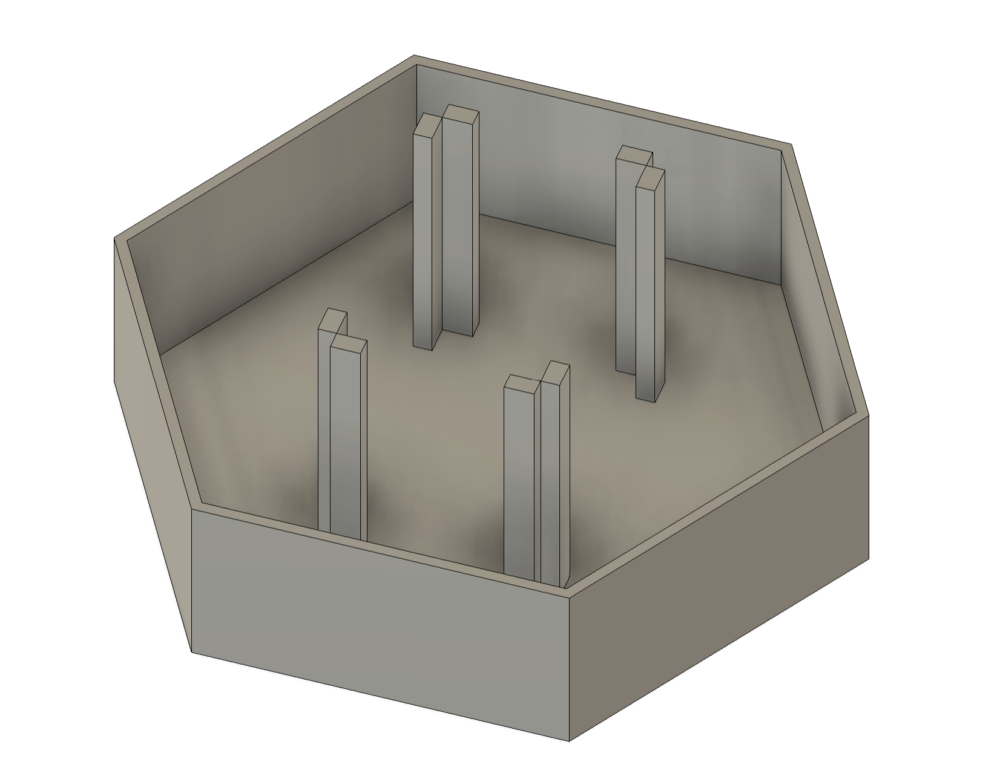
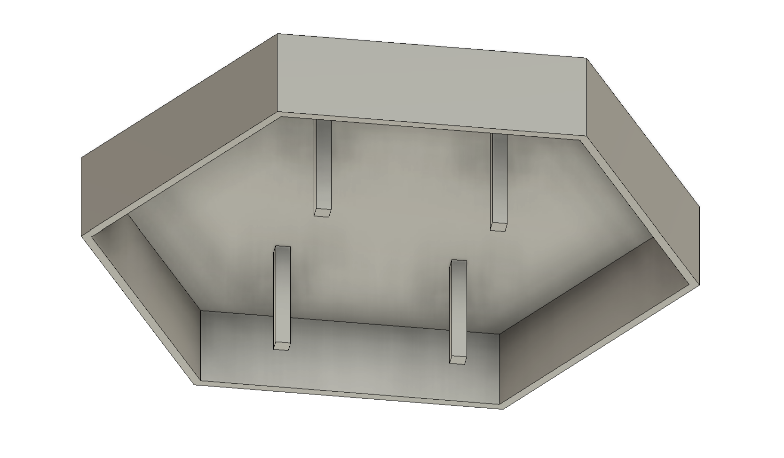

<div class="textcontainer">
<p class="margin"> </p>
<h3>Week 7: Electronic Outputs</h3>
<h4>Assignment: Minimum Viable Product for Final Project</h4>
<p class = "margin"></p>
When I first began to approach my minimal viable product, I hoped to form the externals of my project. I will still include my initial brainstorm for the project's externals but then pivot to the appropriate preparation involved in the project's microcontroller code, and internals.
<p class = "margin"></p>
Early on in the process, I was interested in providing a non-traditional console shape, and decided that I would trial and model a shell for the console while reserving the space the microcontroller would need on the breadboard.
<p class = "margin"></p>
Since I was familiar with many consoles that were made of much more stable materials than cardboard but was intimidated by the prospect of cutting and assembling a material like acryllic, I was interested in making a 3d print. It would allow me to make the pieces fit together with little setup. I was also interested in making a snap fit lid in order to make a satisfying and stable removal of the top cover when working on the internals.
<p class = "margin"></p>


<p class = "margin"></p>
However, I transitioned to making a stable cover using the setup that I'd made for holding the breadboard. But while I was satisfied by the appearance of the box's model in Fusion, I was met with two problems. The first of the two was that the size of a hexagonal console made for an intimidating 3d print build, threatening a waste of filament and wasted time building the console's shell. The second was that it was heavily conditioned on a set of internals and the associated LED positions that I didn't have set in stone yet.
<p class = "margin"></p>
In the end, I've pivoted focusing on the internals of the console, as well as the microcontroller's programming. That way I can determine what types of space I might want to reserve on the top of the console's shell for the LEDs and buttons. While I might form a prototype by preparing to arrange LEDs through a piece of paper, the final project may have to take form in the shape of a cardboard case, which I'm not opposed to now.
<p class = "margin"></p>
The following is significant progress in setting the relevant transitionary LED toggling at each step of the game. This alongside some simple randomness and simpler LED corner transitions should produce a polished game.
<p class="margin"> </p>
<div class="flexrow">
<a id="btn" href="./light_pathing.zip" download>Arduino Program
</a>
</div>
</div>